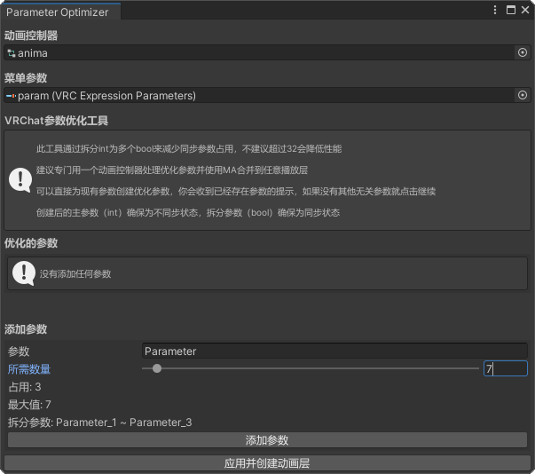

参数优化器
优化VRChat菜单int参数，减少同步参数占用

Tools/VRChat Parameters Optimizer
通过把int的同步转为多个bool更精细的划分参数，可用直接在现有参数上进行创建，利用两个动画层实现本地int转bool，远程bool转int。
下载
哔哩哔哩
参数保存配置工具
快速保存和切换一组参数
Tools/VRChat Parameters Save Setup
把目标参数创建为多组本地保存参数，并在之后保存或加载到目标参数一键切换组合
下载
哔哩哔哩
物品截图工具
快速对特定物品截图
Tools/Object Capture
只对选定物品截图并且保存透明的图片，方便添加背景或描边。
下载
哔哩哔哩